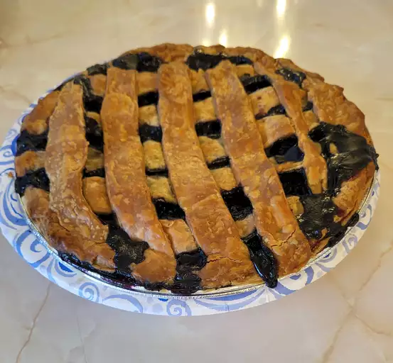

Blueberry Pie

Description
This blueberry pie, made with fresh berries, is a beautiful sight with a
lattice top. Nothing screams "summer" quite like blueberry pie. This
top-rated blueberry recipe will quickly become a seasonal staple in your
home!
Ingredients
These are the ingredients you'll need to make this top-rated blueberry pie
recipe:
- Sugar
- Cornstarch
- Cinnamon
- Salt
- Blueberries
- Pie crust
- Butter
Steps
- Sprinke the berries with sugar, cornstarch, cinnamon and salt
-
Pour the filling into the bottom pie crust and finish with a lattice
crust
- Bake until the filling is bubbling and the crust is golden